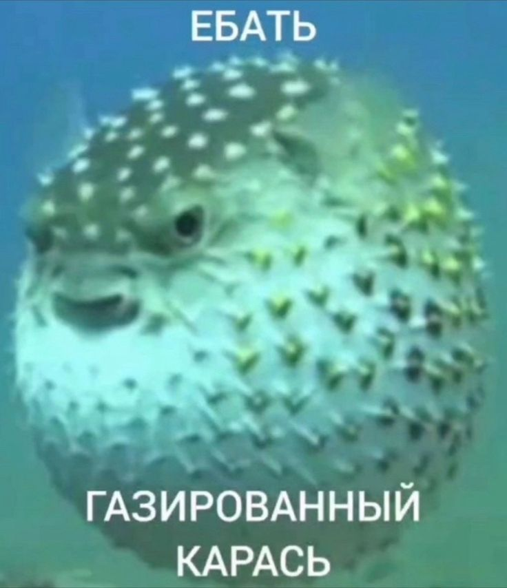

Email: 0CTAN0V1MENYA@protonmail.com | Discord: sad.fugu
mzlff, BOOKER - Ящики
BOOKER - Транки
Я предпочту тебе - С.О.С
«Я родился долбоёбом, очень с этим грустил. Добрый доктор взял, мне выписал билетик на Сибирь. Мол, подумай, посиди. Я подумал, поседел. И так появился мой первый записанный CD»
«Мой менталитет — нахуй всех, невиновных нет.
Мой менталитет — нахуй всех, невиновных нет.»
«Человек - это труп, завёрнутый в тулуп, задроченный до слёз и выброшен на Мороз.
Во все стороны смотрящий не идёт ли разводящий.»
«Если однажды вдруг меня не окажется вовсе в заповедной заветной тарелке Твоего праведного сновидения Знай - Неуловимые мстители настигли меня»